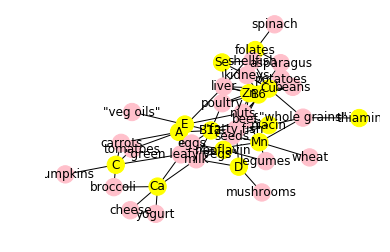

The pip requirments text is held in piprequirments.txt
This project will rework some of the examples found in D.Zinoviev's book: Complex Network Analysis in Python. The code has been rework to fulfill the constraint of Simple Code .
import networkx as nx
import matplotlib.pyplot as plt
graph = nx.Graph()
file = open("../LocalData/nutrients_and_food.csv",'r')
for line in file:
processed_line = line.strip('\n')
data = processed_line.split(',')
graph.add_node(data[0])
graph.add_node(data[1])
graph.add_edge(data[0],data[1])
Code is in jupyter nore book Nutrients.ipynb in the Notebbos directory of this repository
plt.axis('off')
nx.draw_networkx(graph,nx.spring_layout(graph))
Matplotlib used in conjuntion with networkx to plot network.
nutrients = []
file = open('../LocalData/nutrients.csv')
for line in file:
processed_line = line.strip('\n')
data = processed_line.split(',')
nutrients.append(data[0])
Get list of nutrients from seperate csvfile
graph_n = nx.Graph()
file = open("../LocalData/nutrients_and_food.csv",'r')
for line in file:
processed_line = line.strip('\n')
data = processed_line.split(',')
graph_n.add_nodes_from([(data[0],{"nutrients": data[0] in nutrients})])
graph_n.add_nodes_from([(data[1],{"nutrients": data[1] in nutrients})])
graph_n.add_edge(data[0],data[1])
colors = []
for n in graph_n.nodes(data=True):
if n[1]["nutrients"]:
colors.append("yellow")
else:
colors.append("pink")
Iterat through the graph nodes and set a color list
plt.axis('off')
nx.draw_networkx(graph_n,nx.spring_layout(graph_n),node_color=colors)
Plot graph
